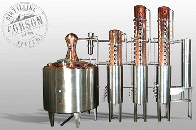
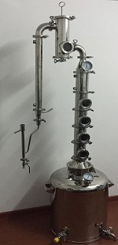

Methods of Distilling:
Base Spirit:
At the start of Gin distilling, a neutral spirit is used as the base, made from fermenting grain such as barley. After the first distillation, of the grain, the mixture is know as "low wines". Repeated distilling produces a stronger spirit. To get the mixture to a state that can be called "Gin" as we know it, the base spirit is distilled in a following method and has the chosen ingredients added to it .i.e. Common Juniper, Citrus. Finally, before bottling, the gin is reduced with water, to lower the ABV.

Steep and Boil Distilling
The mixture of Juniper and other botanicals are steeped in a reduced spirit (Around 50% ABV) and left for up to 48 hours, depending on the distiller. Once the desired flavor is reached, the gin is distilled into a pot still and water is added, to reduce the ABV to 37.5%.
Vapour infusion method
In this method, the added botanicals do not come into contact with the distilling gin itself. Instead, they are hung in a basket above the gin and only come into contact with the gin through the vapour from distilling.
Vacuum Gin Distillation
This method of distilling gin is the same as the Steep and Boild method, but done under a vacuum, reducing the temperature that the ethanol needs to be boiled under. The main downside to this method, is that it requires much more effort to be done, than the simple steeping and boiling.
Individual Botanical Distillation
Variation of the Steep and Boil method. This method has each ingredient steeped and boiled by itself and blended together at the end before bottling. Claimants for this method insist that it allows for more control over the individual flavors, resulting in a consistent taste to the gin.